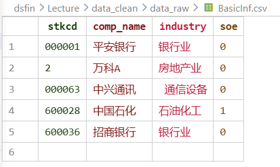
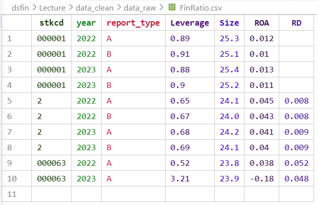
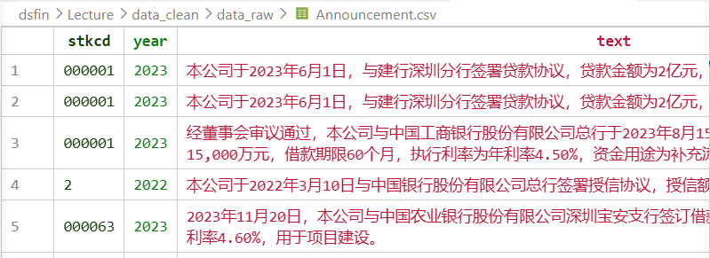

10 数据清洗
- 结构正确：每行是一个观测单位，每列是一个变量，每个单元格只含一个值（tidy data 原则）
- 内容可信：变量的取值在合理范围内，格式统一，无录入错误
- 样本明确：清楚地知道数据覆盖哪些个体、哪些时期，以及遗漏了什么
本章的所有操作都是为了达到这三个标准。
10.1 为什么数据清洗至关重要？
在金融数据分析与建模的实践中，分析师往往将大部分精力投入到模型设计与参数估计上，却容易低估数据质量对最终结论的决定性影响。事实上，无论模型多么精巧，若输入数据存在错误、缺失或单位不一致，所有后续分析都将建立在不稳固的基础之上。
本节通过两个真实的历史案例，说明数据清洗疏失所带来的严重后果——从影响国家政策走向的学术研究，到耗资数亿美元的太空任务失败，错误的根源都是在数据处理阶段可以避免的疏漏。
10.1.1 案例一：Reinhart & Rogoff 的 Excel 错误（2010）
A. 背景
2010 年，哈佛大学经济学家 Reinhart and Rogoff (2010) 发表论文《债务时代的增长》（Growth in a Time of Debt），提出一个影响深远的结论：当一国公共债务与 GDP 之比超过 90% 时，经济增长率将急剧下滑，平均仅为 −0.1%。这一结论迅速被欧美多国政府引用，成为推行财政紧缩政策的重要学术依据。
B. 数据出错了
2013 年，麻省大学经济系研究生 Thomas Herndon 在课堂作业中尝试复现该研究，意外发现原始 Excel 工作表中存在三类错误：
- 公式范围遗漏： 计算平均增长率的公式未涵盖全部国家的数据行，澳大利亚、奥地利、比利时、加拿大和丹麦的数据被排除在外；
- 数据选择性排除： 早期若干年份（如新西兰 1946–1949 年）的数据未被纳入分析；
- 加权方式有误： 对各国数据采用了不合理的等权重处理，未按年份数量加权。
Herndon et al. (2014) 发表论文 (该文在 Google 学术的引用率超过 2000 次) 指出上述错误后，Reinhart 和 Rogoff 承认了这些错误，并修正了数据处理方式。
C. 后果
修正上述错误后，高债务国家的平均增长率从 −0.1% 大幅修正为 +2.2%，结论完全逆转。然而此时，多国已基于原始错误结论实施了数年的紧缩政策，对经济社会造成了难以估量的影响。
10.1.2 案例二：NASA 火星气候轨道飞行器坠毁（1999）
A. 背景
1999 年 9 月，美国国家航空暨太空总署（NASA）耗资 3.27 亿美元研发的火星气候轨道飞行器（Mars Climate Orbiter）在抵达火星后，因轨道偏差过大进入大气层解体，任务彻底失败。这是 NASA 历史上因数据错误导致的最著名的任务失败之一。
B. 数据错的有点离谱
事故调查委员会查明，根本原因是两个工程团队之间的计量单位不一致：
- 洛克希德·马丁公司 的导航软件输出推力数据，单位为英制的磅力·秒（lbf·s）；
- NASA 喷气推进实验室（JPL） 的接收系统则假设数据单位为公制的牛顿·秒（N·s）。
由于 1 lbf·s ≈ 4.45 N·s，两者相差约 4.45 倍，导致飞行轨迹在长达数月的飞行中持续偏移，最终无法修正，任务失败。
C. 损失有点大
飞行器在抵达火星轨道时因高度严重偏低，进入大气层后解体。整个任务历时 9 个月、耗资逾 3 亿美元，最终付诸东流。事后 NASA 正式将此次失败归咎于「未能采用统一的公制单位」这一流程疏漏。
启示： 在数据处理中，量纲与单位的一致性检查是数据清洗的基本步骤。常见的隐患包括：收益率未统一为日频或年化、货币单位在不同来源间混用（如元与万元）、价格数据未区分前复权与后复权等。这些问题看似细微，累积效应却足以导致模型输出严重失真。
10.1.3 小结
上述两个案例横跨经济学与航天工程两个截然不同的领域，却共同揭示了同一个规律：数据质量问题的危害，与领域无关，后果普遍。 无论是学术研究还是工程实践，一旦在数据处理阶段引入错误，后续所有分析都将在错误的基础上叠加。
在金融数据分析中，数据清洗的目标正是在模型建立之前，系统性地识别并处理以下问题：
- 缺失值与异常值（Missing Values & Outliers）
- 数据类型与格式不一致（Type & Format Inconsistency）
- 量纲与单位差异（Unit Mismatch）
- 样本偏差与数据对齐问题（Sample Bias & Alignment）
- 重复记录（Duplicates）
本章以下各节将逐一介绍上述问题的识别方法与处理策略，并结合 Python 代码示例加以说明。
10.2 本章导读
本章的目标不是教你记住所有清洗函数的语法，而是帮你建立两种能力：第一，看到数据时能快速识别潜在问题；第二，能用准确的语言把问题描述清楚，让 AI 辅助你生成可靠的处理代码。
贯穿本章的例子来自一个真实的研究场景：上市公司借款利率的影响因素分析。我们有三张来源不同的表，需要把它们合并成一份可以直接用于回归分析的干净数据。三张表的基本情况如下 (生成如下模拟数据的代码：create_sample_data)：
BasicInf——上市公司基本信息，来源：CSMAR 上市公司基本信息库
- 观测维度：公司（截面）
- 主键：
stkcd（公司ID） - 字段：
stkcd（公司ID）、comp_name（公司简称）、industry（行业归属）、soe（是否为国企，1=是，0=否）
FinRatio——上市公司财务比率，来源：CSMAR 财务比率数据库
- 观测维度：公司 × 年度（面板）
- 主键：
(stkcd, year) - 字段：
stkcd、year、Leverage（总负债/总资产）、Size（ln 总资产）、ROA（资产回报率）、CFlow（经营现金流/总资产）、Cash_holding（现金/总资产）、RD（研发支出/总资产）、report_type（报表类型：A=合并报表，B=母公司报表）
Announcement——上市公司借贷公告，来源：网络爬虫
- 观测维度：公司 × 年度 × 贷款笔数（非结构化文本）
- 字段：
stkcd、year、text（公告原文） - 示例：「本公司于2023年6月1日，与建行深圳分行签署贷款协议，贷款金额为2亿元，期限3年，利率为年化4.2%。」



10.3 数据的分类
在动手清洗之前，先要知道你面对的是什么类型的数据。不同类型的数据，问题的表现形式不同，处理方式也不同。
10.3.1 结构化 vs 非结构化
结构化数据 是指能够自然地用行列表格表示的数据。上文提到的 BasicInf 和 FinRatio 就是典型的结构化数据。结构化数据满足以下三个条件：
- 每一行是一个观测单位
- 每一列是一个变量
- 每个单元格只含一个值。
非结构化数据 没有预定义的格式。文本、图片、音频、视频都属于这一类。我们的 Announcement 公告文本就是非结构化数据——它是一段自然语言，不能直接作为变量放进回归方程。
实际研究中，大量有价值的信息藏在非结构化数据里：上市公司公告、新闻报道、社交媒体、卫星图像…… 处理它们的第一步，通常是把非结构化数据转换为结构化数据，我们在第 2 节专门讨论这个问题。
10.3.2 数值型 vs 字符型
结构化数据中，最基本的区分是数值型和字符型。
数值型变量可以直接参与数学运算。FinRatio 中的 Leverage、ROA、Size 都是数值型——你可以对它们求均值、做回归、画散点图。数值型变量又可以进一步分为：
- 连续变量：理论上可以取任意值，比如 ROA = 0.0437，Size = 22.6。
- 离散变量：只取整数或有限个值，比如贷款期限（1年、3年、5年）。
字符型变量存储的是文本。BasicInf 中的
comp_name、industry都是字符型。字符型变量不能直接做运算，但在数据分析中有两种常见用途：用于合并（作为连接键）或转换为可以建模的形式。
10.3.3 类别变量 vs 有序类别变量
字符型变量中，有一类在经济研究中极为常见，需要特别说明。
类别变量（nominal）：变量的取值是若干个没有大小关系的类别。BasicInf 中的
industry就是——制造业和金融业之间，没有「哪个更大」的关系。处理方式通常是创建虚拟变量（dummy variables）。有序类别变量（ordinal）：取值之间有明确的顺序关系，但间距不一定相等。比如信用评级（AAA > AA > A）、企业规模分类（大型/中型/小型）。处理时需要比类别变量更谨慎——不能简单地用 1/2/3 编码，因为这暗示了等距假设。
特例：二值变量（binary）：只取 0/1 的变量，是类别变量的最简单情形。BasicInf 中的
soe（是否为国企）就是二值变量。
10.3.4 多模态数据
当一个数据集同时包含文本、图像、数值等多种类型时，称为多模态数据。在经济研究中，这个概念正在变得越来越重要——比如用卫星夜间灯光图像来衡量经济活动，同时结合文本新闻和数值统计。目前处理多模态数据的主要工具是大型语言模型和多模态模型，这超出了本章的范围，但值得知道这个方向的存在。
10.3.5 结构化数据与整洁数据
结构化数据是指能够用行列表格表示的数据——每一行是一个观测单位，每一列是一个变量，每个单元格只含一个值。下面两张表是本章贯穿始终的示例数据的子集。
表 3-1 BasicInf（上市公司基本信息，节选）
| stkcd | comp_name | industry | soe |
|---|---|---|---|
| 000001 | 平安银行 | 银行业 | 0 |
| 2 | 万科A | 房地产业 | 0 |
| 000063 | 中兴通讯 | 通信设备 | 0 |
| 600028 | 中国石化 | 石油化工 | 1 |
| 600036 | 招商银行 | 银行业 | 0 |
每行代表一家公司，stkcd 是唯一标识每家公司的主键。
表 3-2 FinRatio（上市公司财务比率，节选）
| stkcd | year | report_type | Leverage | Size | ROA | RD |
|---|---|---|---|---|---|---|
| 000001 | 2022 | A | 0.89 | 25.3 | 0.012 | NaN |
| 000001 | 2023 | A | 0.88 | 25.4 | 0.013 | NaN |
| 2 | 2022 | A | 0.65 | 24.1 | 0.045 | 0.008 |
| 2 | 2023 | A | 0.68 | 24.2 | 0.041 | 0.009 |
| 000063 | 2022 | A | 0.52 | 23.8 | 0.038 | 0.052 |
| 000063 | 2023 | A | 3.21 | “23.9” | −0.18 | 0.048 |
每行代表一家公司在某一年度的财务状况，主键是 (stkcd, year) 的组合。
然而，细心的读者可能已经发现，这两张表虽然是结构化的，但并不完全符合「整洁数据」的标准。
仔细观察这两张表，即便是这份只有几行的小数据，也已经能发现若干问题：
stkcd列中2与其他行的 6 位编码格式不一致；Size列中出现了带引号的"23.9"，说明该值被存储为文本而非数值；Leverage=3.21和ROA=−0.18明显偏离正常范围；RD列存在缺失值。
这些问题在真实数据集中普遍存在，且往往比这里展示的更隐蔽。对照本章开头提出的三个标准来看：
- 结构正确：
stkcd格式不统一，Size类型错误，违反了这一标准 - 内容可信：
Leverage=3.21、ROA=−0.18超出合理范围，需要核查 - 样本明确：
RD的缺失是随机的还是有规律的？需要搞清楚才能决定如何处理
本章接下来的所有操作，都是为了让这份数据最终满足这三个标准。
10.4 非结构化数据的结构化转换
Announcement 数据包含的原始文本为：
本公司于 2023 年 6 月 1 日，与建行深圳分行签署贷款协议，贷款金额为 2 亿元，期限 3 年，利率为年化 4.2%。
要把这条信息纳入定量分析，我们需要从中提取以下字段：
| 字段名 | 说明 | 示例值 |
|---|---|---|
stkcd |
公司 ID（从公告来源获取，非提取） | "000001" |
loan_date |
贷款签署日期 | "2023-06-01" |
bank_name |
银行名称（标准化至法人机构） | "建设银行" |
bank_level |
银行层级 | "地级分行" |
loan_amount |
贷款金额（原始数值） | 2.0 |
loan_unit |
金额计量单位 | "亿元" |
loan_rate |
年化利率（%） | 4.2 |
loan_term_year |
贷款期限（年） | 3 |
公告中的金额表达方式多样：「2 亿元」、「20000 万元」、「0.2 十亿元」指的是同一个数。
如果在提取阶段就统一换算，一旦换算逻辑有误，原始信息就永久丢失了。
更稳健的做法是先提取原始值和单位，在后续的清洗步骤中再统一换算，并保留换算过程可供核查。
银行层级（总行/省级分行/地级分行）对贷款利率有实质性影响——地级分行通常有更大的利率浮动空间，而总行贷款往往意味着更优惠的条件。因此将「建行深圳分行」拆分为银行名称和银行层级两个字段，而非简单保留全称。
我有一批中国上市公司的借贷公告文本，每条文本描述一笔贷款事件。 请帮我从以下文本中提取结构化信息，输出为 Python 字典格式，包含以下字段：
- loan_date: 贷款签署日期，格式为 YYYY-MM-DD
- bank_name: 贷款银行法人机构名称（标准化，如「建设银行」而非「建行深圳分行」）
- bank_level: 银行层级，取值为「总行」、「省级分行」、「地级分行」之一
- loan_amount: 贷款金额原始数值（浮点数，不做单位换算）
- loan_unit: 金额计量单位，取值为「元」、「万元」、「亿元」之一
- loan_rate: 年化利率，单位为 %（浮点数）
- loan_term_year: 贷款期限，单位为年（整数）
规则：
- 如果某个字段无法从文本中提取，返回 None 并在 warnings 字段中注明原因
- 若文本存在歧义或信息不完整，在 warnings 字段中给出提示
输出格式为包含上述字段以及一个 warnings（列表）字段的字典。
文本：「本公司于2023年6月1日，与建行深圳分行签署贷款协议， 贷款金额为2亿元，期限3年，利率为年化4.2%。」
提取完成后，统一换算金额的步骤：
unit_map = {'元': 1, '万元': 10000, '亿元': 100000000}
df['loan_amount_yuan'] = df['loan_amount'] * df['loan_unit'].map(unit_map)10.5 项目文件夹结构
在开始任何数据操作之前，先建立清晰的项目结构。这不是可选项，而是可复现研究的基本要求。一个有条理的文件夹结构，能帮助你在几个月后还能迅速找到数据来源、理解处理逻辑，也能让协作者在没有口头说明的情况下快速上手。
推荐的基本结构如下：
- 本地新建一个文件夹，如
../{Proj_name} - （推荐）在该文件夹下新建以下几个子文件夹，用于分类存放文件：
./data_raw：存放原始数据文件（.csv、.xlsx 等），只读，任何情况下不得覆盖或修改./data_clean：存放处理完毕、可直接用于分析的数据文件./doc：存放说明文档、文献、报告草稿等文件./codes：存放代码文件，包括自编函数、清洗脚本、分析模块等./output：存放输出文件，包括图表、回归结果、报告正文等readme.md（放在根目录）：对项目进行说明，内容包括项目背景与目标、数据来源与下载方式、程序执行顺序、主要变量定义等
变通原则：
以上结构是一个起点，实际项目中可根据需要灵活调整：
- 增加
./data_temp文件夹：用于存放中间过程文件（如提取后尚未聚合的数据）。这类文件可随时由代码重新生成，不属于「最终可用数据」，单独存放有助于区分数据的处理阶段。 - 简化
./codes文件夹：如果整个分析流程只需 1–2 个.ipynb文档，可省去./codes文件夹，直接将.ipynb文档放在项目根目录下，结构更简洁。 - 拆分
./output文件夹：输出内容较多时，可将./output拆分为./output/figures（图形）和./output/tables（表格），便于按类查找。若不希望文件夹层级过深，也可以直接在项目根目录下设置./figures和./tables两个文件夹。 - 按阶段命名代码文件：在
./codes中，推荐为脚本加序号前缀（如01_clean.py、02_merge.py、03_analysis.py），便于理解执行顺序。
例如，一个初始的项目结构可能如下：
project/
├── data_raw/ # 原始数据，只读，永远不修改
│ ├── BasicInf.csv
│ ├── FinRatio.csv
│ └── Announcement/
│ └── raw_html/ # 爬取的原始 HTML 文件
├── data_temp/ # 中间过程文件，可随时重新生成
├── data_clean/ # 最终可用于分析的数据
├── codes/ # 清洗和分析代码
├── output/ # 图表和结果
├── main.ipynb # 主执行脚本，调用 codes 中的函数
└── README.md # 记录数据来源、处理逻辑、变量定义data_raw/文件夹中的文件在任何情况下都不应被覆盖或修改。- 所有处理结果保存到
data_temp/或data_clean/。 - 真正需要修改和实时保存的是代码文件和 README 文档，而非原始数据。
这样即使处理逻辑出错，原始数据始终可以回溯。
10.6 数据清洗的整体流程
本节介绍的五个步骤适用于单张表的清洗。多表合并是在每张表清洗完毕之后的独立环节，将在「第二层：多表操作问题」中单独讨论。
第一步：导入与初步查看
将数据读入 Python，用几个基本命令全面了解数据的形态：行列数、变量类型、缺失情况、基本统计量。这一步的目的不是处理问题，而是发现问题——在没有全面了解数据之前，不要急于动手清洗。
import pandas as pd
df = pd.read_csv('data_raw/FinRatio.csv')
df.shape
df.head()
df.dtypes
df.info()
df.describe()我刚导入了一个名为 FinRatio 的 DataFrame，包含上市公司财务比率数据。 请帮我生成一段 Python 代码，输出以下信息：
- 数据的行列数
- 每列的数据类型、缺失值数量和缺失比例
- 数值型列的描述性统计（均值、中位数、标准差、min、25%、75%、max），小数点后保留 2-3 位
- 检查是否存在完全重复的行
- 输出前 5 行数据，确保格式正确
第二步：识别问题
通过第一步的输出，系统性地检查每一列，将发现的问题逐一记录下来，形成一张「问题清单」。不要边看边改——先把所有问题摸清楚，再统一规划处理顺序，避免前后步骤相互干扰。
| 问题类型 | 涉及列 | 严重程度 | 处理方向 |
|---|---|---|---|
| 缺失值 | RD | 高（约 25%） | 填 0 + 缺失指示变量 |
| 离群值 | Leverage, ROA, CFlow | 中 | 缩尾（Winsorize） |
| 格式不一致 | stkcd | 高 | 统一为 6 位字符串 |
| 报表类型混入 | report_type | 高 | 仅保留合并报表（A） |
| 类型错误 | Size | 中 | 转换为数值型 |
第三步：处理
按照第二步的问题清单逐一处理。顺序很重要，建议遵循以下逻辑：先处理格式和类型问题，再筛选报表类型，然后处理缺失值，最后处理离群值。原因在于：格式错误会导致后续缺失值统计失真（例如 "2" 和 "000002" 被识别为两个不同主键，合并后产生大量假性缺失）；报表类型混入会干扰统计量的计算，影响离群值阈值的判断；而离群值的判断依赖于数值分布的准确性，因此放在最后处理最为稳妥。
第四步：验证
每一步处理完之后，立即验证结果是否符合预期，不要等到全部处理完再统一核查。通用的验证动作包括：比对处理前后的行数（有没有意外丢失观测）、检查关键变量的取值范围（处理后的 min/max 是否合理）、抽查几行原始数据与处理结果是否对应。各类问题的具体验证方法将在后续各小节中介绍。
第五步：输出
清洗完毕后，将结果保存到 data_clean/ 文件夹，不覆盖原始数据。建议同时在 readme.md 中补充一条记录，说明本次清洗的主要操作和输出文件名。
df_clean.to_csv('data_clean/merged_clean.csv', index=False)10.7 第一层：单个数据表的清洗
对于单个数据表，常见的问题类型包括：
- 缺失值（Missing Values）
- 异常值（Outliers）
- 格式不一致（Format Inconsistency）
- 类型错误（Type Errors）
- 重复记录（Duplicates）
- 宽表与长表的转换（Wide vs Long Format）
下面，我们将典型问题浓缩至一组虚构的小型数据集，逐一演示识别、处理和验证的全过程。数据规模刻意压缩（5–10 行），以便清晰展示问题的本质。
10.7.1 虚构数据
BasicInf（5 家公司）：
| stkcd | comp_name | industry | soe |
|---|---|---|---|
| 000001 | 平安银行 | 银行业 | 0 |
| 2 | 万科 A | 房地产业 | 0 |
| 000063 | 中兴通讯 | 通信设备 | 0 |
| 600028 | 中国石化 | 石油化工 | 1 |
| 600036 | 招商银行 | 银行业 | 0 |
注意：stkcd 第二行是整数 2，其余为 6 位字符串——这是格式不一致问题。
FinRatio（10 行，2 家公司 × 2 年 × 2 种报表类型）：
为了确保表格不至于过宽，部分变量名使用了缩写：type 代表 report_type，Cash 代表 Cash_holding。
实际操作中请使用完整变量名。
| stkcd | year | type | Leverage | Size | ROA | CFlow | Cash | RD |
|---|---|---|---|---|---|---|---|---|
| 000001 | 2022 | A | 0.89 | 25.3 | 0.012 | 0.015 | 0.08 | NaN |
| 000001 | 2022 | B | 0.91 | 25.1 | 0.010 | 0.013 | 0.07 | NaN |
| 000001 | 2023 | A | 0.88 | 25.4 | 0.013 | 0.016 | 0.09 | NaN |
| 000001 | 2023 | B | 0.90 | 25.2 | 0.011 | 0.014 | 0.08 | NaN |
| 2 | 2022 | A | 0.65 | 24.1 | 0.045 | 0.032 | 0.12 | 0.008 |
| 2 | 2022 | B | 0.67 | 24.0 | 0.043 | 0.030 | 0.11 | 0.008 |
| 2 | 2023 | A | 0.68 | 24.2 | 0.041 | -0.05 | 0.10 | 0.009 |
| 2 | 2023 | B | 0.69 | 24.1 | 0.040 | -0.04 | 0.10 | 0.009 |
| 000063 | 2022 | A | 0.52 | 23.8 | 0.038 | 0.028 | 0.15 | 0.052 |
| 000063 | 2023 | A | 3.21 | “23.9” | -0.18 | 0.021 | 0.13 | 0.048 |
注意植入的问题：stkcd=2 格式不一致；000001 同时有 A/B 两种报表；Leverage=3.21 是离群值；ROA=-0.18 是极端值；Size="23.9" 被存为字符串；RD 有缺失值。
为了确保下表显示时不至于过宽，部分变量名使用了缩写：
date代表loan_datelevel代表bank_levelamount代表loan_amountunit代表loan_unitrate代表loan_rateterm代表loan_term_year
实际操作中请使用完整变量名。
Announcement（提取后，加总前）（5 行）：
| stkcd | year | date | bank_name | level | amount | unit | rate | term |
|---|---|---|---|---|---|---|---|---|
| 000001 | 2023 | 2023-06-01 | 建设银行 | 地级分行 | 2.0 | 亿元 | 4.2 | 3 |
| 000001 | 2023 | 2023-06-01 | 建设银行 | 地级分行 | 2.0 | 亿元 | 4.2 | 3 |
| 000001 | 2023 | 2023-08-15 | 工商银行 | 省级分行 | 15000.0 | 万元 | 4.5 | 5 |
| 2 | 2022 | 2022-03-10 | 中国银行 | 总行 | 5.0 | 亿元 | 3.8 | 3 |
| 000063 | 2023 | 2023-11-20 | 农业银行 | 地级分行 | 8000.0 | 万元 | 4.6 | 2 |
这份数据存在如下问题：
- 前两行完全重复（同一笔贷款被爬取了两次）；
stkcd=2格式不一致；- 金额单位混用（亿元/万元）。
10.7.2 缺失值
在处理缺失值之前，先要搞清楚缺失的原因和机制。缺失值的处理方式，取决于它是随机缺失（Missing Completely at Random, MCAR）、条件缺失（Missing at Random, MAR）还是非随机缺失（Missing Not at Random, MNAR）。
在我们的例子中，由于早期年份披露规则不完善，RD 的缺失很可能是 MNAR。例如，研发投入少 (设置为零) 的公司更倾向于不披露；也有可能恰恰相反，研发投入多的公司由于担心泄露商业秘密而不披露。这意味着缺失不是随机分布的，不能简单删除。文献中常用 Little’s MCAR test 来检验缺失机制，但在实际操作中，结合业务理解和数据探索更为重要。实证分析中，这种非随机缺失往往是导致内生性问题的根源之一，通常会采用 Heckman 两步法或 IV 方法来纠正。
三种处理思路：
删除：缺失比例很低（通常 <5%）且缺失是随机的，可以删除含缺失值的行。对于 RD 这样 25% 缺失且非随机的情况，删除会导致样本严重偏向「有研发投入」的公司。
替换为 0：在有些情况下，若有足够的理由说明缺失数据的实际值为 0 (比如一些小型企业确实没有研发支出)，可以将缺失值填充为 0。更稳健的做法创建指示变量
RD_missing（1=原本缺失），在回归中同时纳入两个变量：RD_filled（填充后的值）和RD_missing（缺失指示）。这样既保留了样本量，又能捕捉缺失背后的信息。参见 缺失值能否用零代替？。插补：用其他变量预测缺失值（多重插补）。适用于缺失比例较高且后续分析对该变量要求严格的情况。常用方法包括基于回归的插补、KNN 插补、随机森林插补等。需要注意的是，插补后的数据不应直接用于分析，而是需要进行多重插补的 Rubin 规则来合并结果。
我有一个 DataFrame df，其中 RD 列有约 25% 的缺失值。 背景：RD 表示研发支出占总资产的比例，缺失原因可能是企业未进行研发投入或未披露。 请帮我：
- 统计 RD 的缺失数量和比例
- 检验缺失是否与公司规模 (Size 列)、行业 (industry 列) 和年份 (year 列) 相关 (用缺失指示变量对这两个变量做交叉统计，如 t-test 或样本分布对比)
- 生成两个新列：
- RD_filled：将缺失值填充为 0
- RD_missing：1 表示原本缺失，0 表示有值
- 输出处理前后 RD 列的描述性统计对比（包含均值、中位数、标准差）
10.7.3 离群值与缩尾（Winsorize）处理
问题的本质： 离群值是指在统计上远离其他观测值的数据点。在我们的虚构数据中，Leverage=3.21（即负债是资产的 3.21 倍）和 ROA=-0.18 都是极端值。这类数值在回归中会对估计结果产生不成比例的影响。
识别方法：
for col in ['Leverage', 'ROA', 'CFlow']:
print(f"\n{col}:")
print(df[col].describe(percentiles=[.01, .05, .95, .99]))如果 max 远大于第 99 百分位数，或 min 远小于第 1 百分位数，说明存在极端值。也可以用箱型图进行直观判断：
import matplotlib.pyplot as plt
df[['Leverage', 'ROA', 'CFlow']].boxplot()
plt.title('处理前的变量分布')
plt.show()缩尾（Winsorize）处理：
缩尾不删除极端值，而是将超出阈值的值替换为阈值本身——通常是上下各 1%分位数。注意区分两个概念：
- 截尾（trimming）：直接删除超出阈值的观测行，样本量减少
- 缩尾（winsorizing）：将超出阈值的值替换为阈值，样本量不变
实证论文中绝大多数情况使用缩尾，因为它保留了样本量，不改变数据的分布形状。
我有一个 DataFrame df，需要对以下列进行缩尾（Winsorize）处理： [‘Leverage’, ‘ROA’, ‘CFlow’, ‘Cash_holding’]
要求：
- 按上下各 1% 分位数进行缩尾（即将低于 1% 分位数的值替换为该分位数值， 高于 99% 分位数的值替换为该分位数值）
- 处理在每一列内独立进行
- 生成新列，命名规则为原列名加 _w 后缀（如 Leverage_w），保留原列不变
- 输出处理前后各列的 min、均值、中位数、标准差、max 对比表格
- 分别绘制处理前后各变量的箱型图，并排显示
验证处理结果：
缩尾之后需要从以下几个角度确认结果合理：
查看基本统计量。处理后的均值和标准差应与文献中同类研究的报告值大体一致。比如，中国上市公司的平均资产负债率通常在 0.4–0.6 之间，若处理后均值大幅偏离，说明阈值设定或数据本身有问题。
比较处理前后的均值和标准差。两者应无系统性差异——缩尾只影响分布的尾部，不应大幅改变均值。
绘制处理前后的箱型图或密度图，直观确认极端值已被压缩至合理范围。
10.7.4 格式不一致
问题的本质： 同一个变量，在不同数据来源或不同导出方式下，可能用不同格式记录。格式不一致不会让代码报错，但会让合并失败或产生错误结果。
在我们的虚构数据中，stkcd 在 BasicInf.csv 和 FinRatio.csv 里大多是 6 位字符串（"000001"），但万科 A 的代码被存为整数 2。合并时 "000002" != 2，结果是这家公司找不到匹配，产生大量 NaN——Python 不会报错，只是静默失败。
其他常见格式问题还有：日期格式混用（"2023-06-01" vs "20230601"）、行业编码含多余空格（" 银行业" vs "银行业"）、金额单位混用。
我有两个 DataFrame BasicInf 和 FinRatio，都有 stkcd 列作为公司ID。 请帮我：
- 检查两张表中 stkcd 列的数据类型和前 10 个唯一值样本
- 将两张表的 stkcd 统一转换为 6 位字符串格式（不足 6 位的补前导零）
- 验证转换后的重叠情况：
- 两表共同 stkcd 数量
- BasicInf 独有的 stkcd 数量
- FinRatio 独有的 stkcd 数量
- 对 industry 列检查是否含有多余空格，如有则去除
- 输出处理后的 stkcd 列的前 10 个唯一值样本，确认格式正确
10.7.5 重复观测
问题的本质： 同一个观测单位出现了不止一次。重复分三种情形，性质和处理方式各不相同。
情形一：精确重复
每一列的值完全相同。在我们的 Announcement 提取数据中，同一条公告被爬取了两次，产生完全相同的两行。处理最简单：
df.drop_duplicates(inplace=True)情形二：模糊重复
关键字段相同，但部分字段略有差异。比如同一笔贷款的原始公告和补充公告，金额和利率相同但日期不同。需要根据业务逻辑定义「什么算同一笔贷款」，然后按规则保留其中一条。
我有一个 DataFrame df_loans，包含从上市公司公告中提取的贷款信息。
- 列名：stkcd, year, loan_date, bank_name, loan_amount, loan_unit, loan_rate, loan_term_year
请帮我：
- 检查并删除完全重复的行，输出删除前后的行数
- 检查「业务意义上的重复」：同一公司（stkcd）、同年（year）、 相同金额（loan_amount）、相同利率（loan_rate）的记录是否有多条
- 对于步骤2中的重复，保留 loan_date 最早的一条，删除其余
- 输出最终行数及每步操作删除的行数
情形三：报表类型混入导致的「伪重复」
这是一种更隐蔽的情形。在我们的 FinRatio 数据中，(stkcd="000001", year=2022) 出现了两次，但 Leverage 等变量的值并不相同——分别是合并报表（report_type="A"）和母公司报表（report_type="B"）的数据。
这种情况如果不处理，会导致面板数据的主键不唯一，无法进行固定效应估计、一阶差分等运算，且报错信息往往不直观，很难定位原因。
这种「伪重复」的根本原因是样本混淆：两种口径的数据被装进了同一张表。正确的处理方式不是随机保留其中一行，而是明确研究需要哪种口径（通常选合并报表），然后按 report_type 筛选。
我有一个 DataFrame df，包含上市公司财务数据。 请帮我：
- 检查主键
(stkcd, year)是否唯一 - 查看重复的报表类型分布
- 仅保留合并报表（
report_type="A"）{可以替换为其他内容} - 验证处理后主键唯一性
典型代码如下：
# 检查主键唯一性
print(df.duplicated(subset=['stkcd', 'year']).sum(), "组 (stkcd, year) 存在重复")
# 查看重复的报表类型分布
print(df['report_type'].value_counts())
# 仅保留合并报表
df = df[df['report_type'] == 'A'].copy()
# 验证处理后主键唯一
assert df.duplicated(subset=['stkcd', 'year']).sum() == 0, "仍有重复，请检查"10.7.6 数据类型错误
问题的本质： 变量的存储类型与其语义类型不符。最常见的情形是数值型变量被存储为字符串。
在我们的虚构数据中，Size 列的 2023 年值被存为字符串 "23.9"——可能是该单元格含有注释符号或空格，导致 pandas 将整列识别为 object 类型。对这列求均值会直接报错。
我有一个 DataFrame df，怀疑部分应为数值型的列被读取为字符串类型。 请帮我：
- 列出所有 dtype 为 object 的列
- 对这些列，尝试用 pd.to_numeric(errors=‘coerce’) 转换， 统计转换过程中产生了多少个 NaN（即原本含非数值字符的单元格数量）
- 对于产生 NaN 数量 > 0 的列，输出那些无法转换的原始值（value_counts 前10个）
- 在我确认后，再生成最终的类型转换代码
注意第 4 步：先展示问题，确认后再处理，避免 AI 猜对了问题但处理方式不符合实际需求。
10.7.7 宽表与长表的转换
数据分析中经常需要在两种表格形式之间转换：
- 长表（long format）：每行是一个观测单位在某个时间点的一条记录。适合面板数据分析。
- 宽表（wide format）：每行是一个个体，不同时间点的数据分布在不同列。适合某些可视化场景或来自网页的原始数据。
场景一：多笔贷款聚合（长表内部聚合）
一家公司在同一年可能有多笔贷款，Announcement.csv 提取结果是每笔贷款一行，而在 FinRatio.csv 文件中，是每个「公司-年」一行。因此，在对 Announcement.csv 和 FinRatio.csv 进行横向合并之前，需要先将 Announcement.csv 从「长表」聚合为「公司-年」层面，生成新的指标（如贷款总金额、加权平均利率等），才能与 FinRatio.csv 的公司-年层面数据正确「对齐」。
需要说明的是，虽然贷款总金额可以直接将同一年度内获得所有贷款进行求和，但在对「利率」和「贷款期限」进行聚合时建议使用加权平均值（权重为贷款金额），而非简单算术平均。因为不同金额的贷款对公司的财务状况影响不同，简单平均可能会低估大额贷款的影响力。最大贷款银行的识别也需要考虑金额、期限等多个维度，以便更准确地反映公司的贷款结构。
我有一个长表 df_loans，包含公司-年-贷款层面的数据： stkcd, year, loan_amount（已统一为万元）, loan_rate, loan_term_year, bank_name, bank_level
请将其聚合为公司-年层面，生成以下指标：
- loan_count: 贷款笔数
- avg_loan_rate: 以 loan_amount 为权重的加权平均利率
- total_loan_wan: 贷款总金额（万元）
- avg_loan_term: 以 loan_amount 为权重的加权平均贷款期限
- bank_count: 在同一个年度有几家不同的银行提供贷款
- top_bank: 贷款金额最大的银行名称 / 若金额相同则选择贷款期限最长的银行名称
请使用 groupby + agg 实现，输出聚合前后的行数对比。
场景二：宽表转长表（reshape）
来自网页或部分数据库的原始数据常常是宽表格式。以收入和失业率数据为例，原始宽表可能长这样：
* 原始资料(可能来自网页等途径) 【wide 型数据】
income unemployee
-----------------------------------+----------------------
id sex 1980 1981 1982 | 1980 1981 1982
-----------------------------------+----------------------
1 0 5000 5500 6000 | 0 1 0
2 1 2000 2200 3300 | 1 0 0
3 0 3000 2000 1000 | 0 0 1
-----------------------------------+----------------------
* 整理后的资料 【wide 型数据】
id sex inc1980 inc1981 inc1982 ue1980 ue1981 ue1982
1 0 5000 5500 6000 0 1 0
2 1 2000 2200 3300 1 0 0
3 0 3000 2000 1000 0 0 1
* 最终需要的资料 (panel data) 【long 型数据】
id year sex inc ue
1 1980 0 5000 0
1 1981 0 5500 1
1 1982 0 6000 0
2 1980 1 2000 1
2 1981 1 2200 0
2 1982 1 3300 0
3 1980 0 3000 0
3 1981 0 2000 0
3 1982 0 1000 1 注意这里有两组时变变量（inc 和 ue），每组各三列，这比单组变量的 reshape 复杂，是实际工作中最常见的「卡壳点」。
我有一个宽表 df_wide，结构如下：
- 固定列（不随时间变化）：id, sex
- 时变列（格式为「变量名_年份」）：inc_1980, inc_1981, inc_1982,
ue_1980, ue_1981, ue_1982
请帮我将其转换为长表，目标格式为：
id, year, sex, inc, ue
其中 year 列应为整数（1980, 1981, 1982）。
请使用 pd.wide_to_long() 或 pd.melt() 实现，
并输出转换前后的行列数对比和前 9 行结果。
10.8 第二层：多个数据表的合并与追加
数据分析中经常需要将来自不同来源、不同层次的数据表进行合并。这类合并通常称为「横向合并 (merge)」或「横向关联 (join)」。这类合并的关键在于主键的定义和唯一性，以及连接类型的选择。错误的主键定义或连接类型选择，都会导致样本丢失或行数膨胀，严重影响后续分析的有效性。
另一类合并是「纵向追加 (concat 或 append)」，即将一张表的行追加到另一张表的下面。这种合并的关键在于列名的一致性和数据类型的一致性，以及是否需要重置索引。例如，当上市公司的财务数据分为多个文件（如 2022 年和 2023 年分别存储在不同文件中）时，需要先对两张表进行清洗，确保列名和数据类型一致，然后再进行纵向追加。
相比之下，横向合并更容易出问题，因为它涉及到不同表之间的匹配关系，而纵向追加只要列名和数据类型一致，通常不会出现样本丢失或行数膨胀的问题。因此，后文中除非特别说明，但凡提及「合并」，默认指的是横向合并。
10.8.1 横向合并前的准备
在做任何合并之前，需要明确三张表各自的主键：
- BasicInf：主键为
stkcd（每家公司一行） - FinRatio（筛选合并报表后）：主键为
(stkcd, year) - Announcement（聚合后）：主键为
(stkcd, year)
合并策略：先将 BasicInf 与 FinRatio 以 stkcd 为键进行左连接（以 FinRatio 为主表），再将结果与聚合后的 Announcement 以 (stkcd, year) 为键进行左连接。
在合并 BasicInf 和 FinRatio 之前，请帮我做以下检查：
- 验证 BasicInf 中 stkcd 是否唯一
- 验证 FinRatio 中 (stkcd, year) 组合是否唯一
- 统计两张表 stkcd 的重叠情况： 共同 stkcd 数量、BasicInf 独有数量、FinRatio 独有数量
- 根据检查结果，建议合并类型并说明理由
10.8.2 连接类型选错导致样本丢失
四种连接类型的核心区别在于如何处理找不到匹配的行：
inner：只保留两表都有的记录，会静默丢弃单边记录left：保留左表所有记录，右表无匹配的填 NaNright：保留右表所有记录outer：保留两表全部记录
一个典型的错误场景：用 inner join 合并 FinRatio 和 Announcement，会丢弃所有「有财务数据但当年无贷款公告」的公司-年观测——这意味着样本隐含了「有借款行为」的条件，结论无法推广到所有公司。
我刚完成了一次 merge 操作，结果存储在 df_merged 中。 请帮我验证合并是否符合预期：
- 输出左表行数、右表行数、合并后行数
- 统计合并后来自右表的列的缺失值数量
- 若合并后行数 > 左表行数，警告可能发生了一对多导致的行数膨胀
- 若合并后行数 < 左表行数 × 0.9，警告可能有大量记录未匹配
如果 BasicInf 中某家公司的 stkcd 出现了两次（录入错误），合并时该公司的每条财务记录都会被复制，行数静默增加，且不报错。
预警信号就是合并后行数超过预期，因此上面的合并后验证步骤至关重要。
10.9 样本选择偏差
完成前两层的操作之后，数据在技术层面已经「干净」了：格式统一、主键唯一、类型正确、重复已删。但这里有一个重要的区分：
数据干净 ≠ 样本可信 ≠ 结论可推广
即使一份数据没有任何格式错误，它仍然可能因为「哪些观测进入了样本、哪些没有」这一机制，导致估计结果系统性偏误。这就是样本选择偏差（sample selection bias）。
10.9.1 一个直观的例子
我们的研究问题是：上市公司的贷款利率（Rate）受哪些因素影响？
手头有 10 家公司的数据，包含杠杆率（Leverage）、公司规模（Size，ln 总资产）和国企身份（soe）。其中 6 家公司在公告中完整披露了贷款利率，另外 4 家没有披露——换句话说，Rate 对 4 家公司是缺失的（NaN）。
乍一看，这只是一个普通的缺失值问题，用上一节介绍的方法处理即可。但在动手之前，需要先问一个关键问题：
这 4 家公司的贷款利率，是「随机」没有披露，还是「因为某些特征」而没有披露？
如果是后者，那么留在样本里的 6 家公司就不是全体上市公司的随机子集，用它们估计出的系数将无法推广到整体。
表 3-X mini 数据集（N = 10）
| id | 公司 | soe | Leverage | Size | Rate（%） |
|---|---|---|---|---|---|
| 1 | 平安银行 | 0 | 0.89 | 25.3 | 4.20 |
| 2 | 万科A | 0 | 0.65 | 24.1 | 3.85 |
| 3 | 中兴通讯 | 0 | 0.52 | 23.8 | 4.50 |
| 4 | 中国石化 | 1 | 0.58 | 26.2 | 3.60 |
| 5 | 招商银行 | 0 | 0.88 | 25.4 | 4.10 |
| 6 | 格力电器 | 0 | 0.44 | 23.5 | 4.75 |
| 7 | 宁德时代 | 0 | 0.72 | 23.2 | —（未披露） |
| 8 | 东方财富 | 0 | 0.68 | 22.8 | —（未披露） |
| 9 | 三一重工 | 0 | 0.75 | 23.9 | —（未披露） |
| 10 | 比亚迪 | 0 | 0.70 | 23.4 | —（未披露） |
注意观察第 7–10 行的公司：它们的规模（Size）均低于 24，而已知组（第 1–6 行）的规模普遍更大。这不像是巧合。
10.9.1.1 第一步：用分组统计检验缺失是否随机
最简单的诊断方式是按 Rate 的缺失状态把样本分成两组，比较它们在其他变量上的均值是否存在系统性差异。
表 3-X+1 按 Rate 缺失状态分组的描述统计
| 变量 | y 已知组（n = 6） | y 缺失组（n = 4） | 差异 |
|---|---|---|---|
| Leverage（均值） | 0.660 | 0.712 | +0.052 |
| Size（均值） | 24.72 | 23.33 | −1.39 * |
| 国企占比 | 16.7% | 0.0% | −16.7% |
注：* 表示 t 检验 p < 0.05。样本量极小（n = 10），仅供方向性判断。
结论很清晰：缺失组的公司规模显著偏小（均值相差约 1.4 个对数点，p = 0.042），且全为民营企业。 这说明 Rate 的缺失不是随机的，而是系统性地集中于「规模较小的民营公司」——这类公司的银行贷款更多依赖间接渠道，信息披露动力和能力都相对不足。
from scipy import stats
obs = df[df['Rate'].notna()] # y 已知（n=6）
miss = df[df['Rate'].isna()] # y 缺失（n=4）
# 对每个协变量做 t 检验
for var in ['Leverage', 'Size', 'soe']:
t, p = stats.ttest_ind(obs[var], miss[var])
print(f"{var}: 已知均值={obs[var].mean():.3f}, "
f"缺失均值={miss[var].mean():.3f}, p={p:.3f}")我有一个 DataFrame df，其中 Rate 列存在部分缺失（NaN）。 请帮我诊断缺失是否随机：
- 新建一个二值变量
rate_missing：Rate 缺失时为 1，否则为 0 - 对
['Leverage', 'Size', 'soe']三列，分别计算rate_missing=1和rate_missing=0两组的均值，并做 t 检验 - 输出一张对比表：变量名、两组均值、差异、t 统计量、p 值
- 如果任一变量的 p < 0.1，给出警告提示：缺失可能不随机，建议谨慎处理
10.9.1.2 第二步：理解偏差的方向
如果直接删除 Rate 缺失的 4 家公司，用剩余 6 家估计「规模对利率的影响」，会发生什么？
下图展示了问题所在。图（b）中，蓝色拟合线基于已知组（n = 6）估计，斜率约为 −0.30。但缺失的 4 家公司（橙色菱形）全部堆积在图的左侧低规模区域——如果它们的利率被观测到，大概率会比现有拟合线预测的更高（规模小、融资难、利率高）。这意味着：
已知组的拟合线高估了规模对利率的负向效应。 真实斜率（包含缺失组后）应更平缓。

图（a）同样值得关注：缺失组的杠杆率（Leverage）均值略高于已知组（0.71 vs 0.66），方向符合预期，但因样本量极小（n = 4），未达统计显著。在真实数据中，这类方向性证据仍需认真对待。
10.9.1.3 这个例子说明了什么
样本选择偏差的关键特征有三：
一、缺失不随机（MNAR）。 数据缺失的概率本身与研究关注的变量相关——本例中，规模越小的公司越可能不披露贷款利率，而规模恰好是影响利率的核心变量。
二、偏差方向可以推断。 通过分组统计就能看出：留在样本里的公司系统性地规模更大、利率更低。因此用这个样本估计的 Size 系数（利率随规模下降的速度）被高估，即斜率绝对值偏大。
三、数据清洗本身无法解决这个问题。 无论如何填充缺失值，都无法恢复这 4 家公司的「真实」利率信息。真正的解决方案是在建模阶段引入选择方程，对缺失机制进行显式建模。
本节的目标是让你在数据阶段就发现这个潜在问题，并在研究报告中诚实说明。处理样本选择偏差的计量方法将在后续章节介绍：
- Heckman 两步法：用 Probit 模型对「利率是否披露」建模（选择方程），再将逆米尔斯比率（IMR）加入主回归方程纠正偏误
- 熵平衡（Entropy Balancing）：对已知组和缺失组的协变量分布进行重加权，使两组在均值（乃至高阶矩）上可比
- 匹配方法（Matching）或逆概率加权（IPW）：基于选择方程的预测概率，对已知组进行加权或匹配，使其在协变量分布上与缺失组更接近
在此之前，数据清洗阶段能做的最重要的事，是把这个问题暴露出来——用分组统计表清楚地展示缺失组与已知组的差异，并在研究报告中明确说明：样本仅包含贷款利率有公开披露的公司，结论的外部有效性因此受到限制。
10.9.1.4 更大范围的样本选择问题
上面的例子聚焦于「y 缺失」这一种形式，但样本选择偏差在金融数据中有更广泛的来源，值得在拿到数据时就系统性地检查：
数据库覆盖范围本身就是一种选择。 CSMAR 只收录 A 股上市公司，而上市公司是经过市场筛选的群体，在规模、信披质量和融资能力上与非上市企业有系统性差异。用这份数据估计的融资成本决定因素，严格来说只适用于「有资格上市」的公司群体。
生存偏差（survivorship bias）。 样本里只有「活着」的公司，退市、被 ST、破产重组的公司已经从数据库中消失。如果这些公司在退出前的财务特征（高杠杆、低盈利）与研究变量相关，基于现存样本的估计会系统性地低估风险变量的影响。
自愿披露与选择性报告。 部分财务指标（如研发支出、高管薪酬细节）并非强制披露，倾向于主动披露这些信息的公司可能本身就在该维度上表现更好，导致「有数据的样本」与「没有数据的样本」之间存在系统性差异。
处理以上这些问题，需要在研究设计阶段就做出明确的样本界定，并在稳健性检验中评估样本选择对结论的影响。
10.9.2 自选择偏误
观察到「国有企业的平均借款利率低于民营企业」，这能说明「国企身份导致了更低的融资成本」吗？不一定。国企可能同时在财务质量上优于同类民企，银行给出更低利率是因为风险评估，而非国企身份本身。这就是自选择偏误——某种特征（国企身份）的获得不是随机的，而是与其他影响结果的变量同时相关。
类似的问题在经济研究中无处不在：
- 「名校毕业生的教育回报率更高吗？」——还是因为能进名校的人本来就能力更强？(Card, 1995)
- 「政府对高新技术企业的税收优惠是否促进了创新投入？」——还是因为本来就有创新意愿的企业更容易获得认定资格？
这类问题不能通过数据清洗解决，需要专门的因果推断方法（工具变量、Heckman 两步法、匹配方法、断点回归等）。我们将在后续章节详细讨论。
10.10 提示词模式：从问题描述到可运行代码
一个好的数据处理提示词通常包含四个要素：
① 数据背景：这是什么数据，来自哪里，分析单位是什么。
「我有一个上市公司面板数据，来自 CSMAR，每行代表一个公司-年观测。」
② 问题描述：你观察到了什么现象，或者你担心存在什么问题。
「RD 列有约 25%的缺失值，怀疑缺失与行业和年份有关。」
③ 处理要求：你希望如何处理，包括具体的参数、字段名和格式要求。
「将缺失值填充为 0，同时创建指示变量 RD_missing，新列保留原列名加后缀。」
④ 验证要求：处理完之后需要验证什么。
「输出处理前后的缺失值数量对比，以及新列的 value_counts。」
当你能够完整写出这四个要素，生成的代码通常可以直接运行。相反，「帮我处理缺失值」这样的提示词生成的代码在技术上可能正确，但完全不符合实际需求。
10.10.1 综合案例与章末练习
10.10.2 完整处理流程
- 分别导入 BasicInf、FinRatio、Announcement 原始数据至
data_raw/ - 对 Announcement 文本做非结构化提取，保存至
data_temp/ - 对 Announcement 提取结果做去重（精确重复 + 模糊重复）
- 统一三张表的
stkcd格式（6位字符串） - 筛选 FinRatio 仅保留合并报表（
report_type="A"） - 对 FinRatio 做类型检查（修复
Size列） - 将 Announcement 提取结果金额统一换算为万元
- 按
(stkcd, year)聚合 Announcement（长表→宽表） - 验证三张表的主键唯一性
- 分两步合并三张表，每步合并后验证行数
- 对 Leverage、ROA、CFlow、Cash_holding 做缩尾处理（上下各1%）
- 对 RD 创建填充列和缺失指示变量
- 输出最终数据集至
data_clean/merged_clean.csv
10.10.3 章末练习
请使用本章提供的虚构数据集完成以下任务：
- 用提示词生成代码，输出一份完整的数据质量报告
- 逐步执行第7节的完整处理流程，记录每步处理前后的行数和关键统计量变化
- 尝试对 FinRatio 不筛选报表类型直接合并，观察结果有何异常
- 思考题：若要将本研究的结论推广至所有中国企业，需要补充哪些论证？CSMAR 数据的样本特征对哪类研究问题影响最大？
10.11 参考文献
Card, D. (1995). Using geographic variation in college proximity to estimate the return to schooling. In L. N. Christofides, E. K. Grant, & R. Swidinsky (Eds.), Aspects of labour market behaviour: Essays in honour of John Vanderkamp （pp. 201–222）. University of Toronto Press. Google.
Herndon, T., Ash, M., & Pollin, R. (2014). Does high public debt consistently stifle economic growth? A critique of Reinhart and Rogoff. Cambridge Journal of Economics, 38（2）, 257–279. Link, PDF, Google.
Reinhart, C. M., & Rogoff, K. S. (2010). Growth in a time of debt. American Economic Review: Papers & Proceedings, 100（2）, 573–578. Link, PDF, Google.